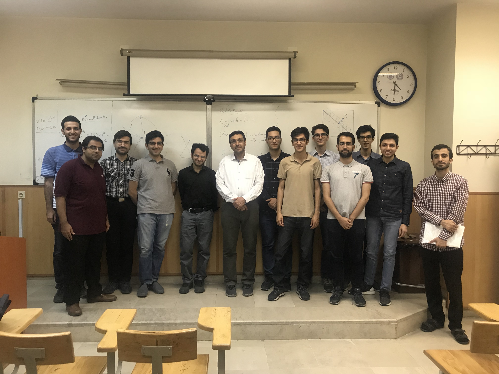
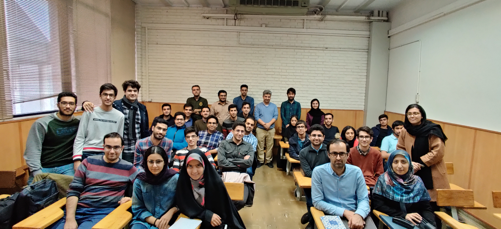
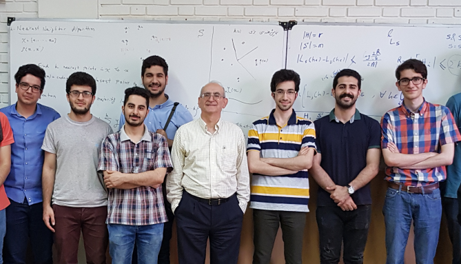
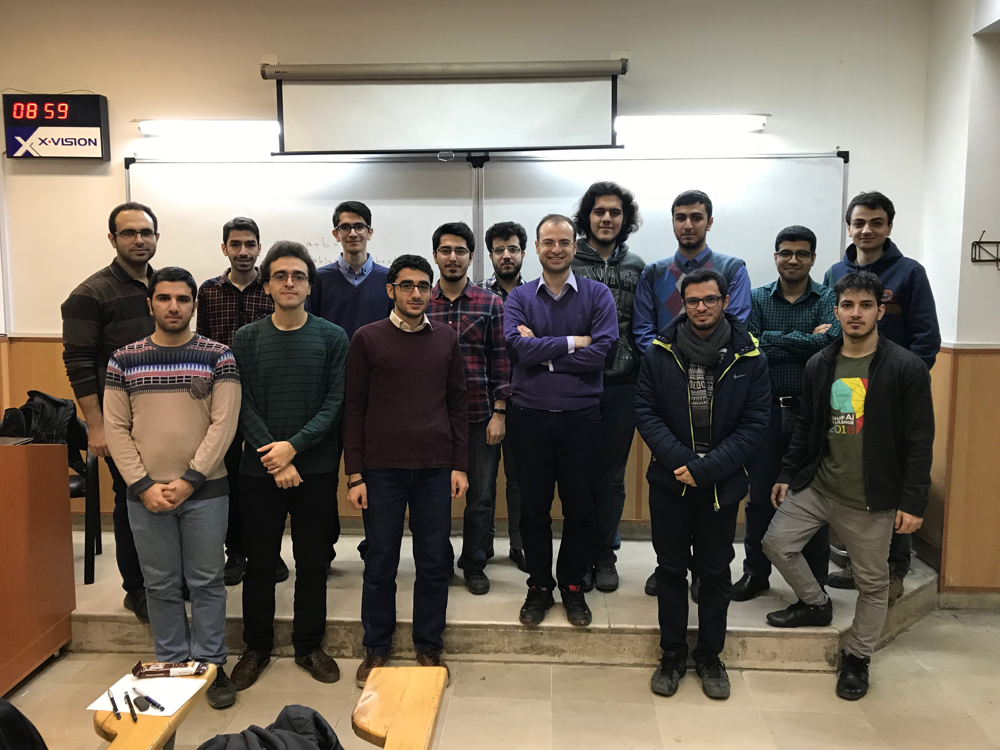
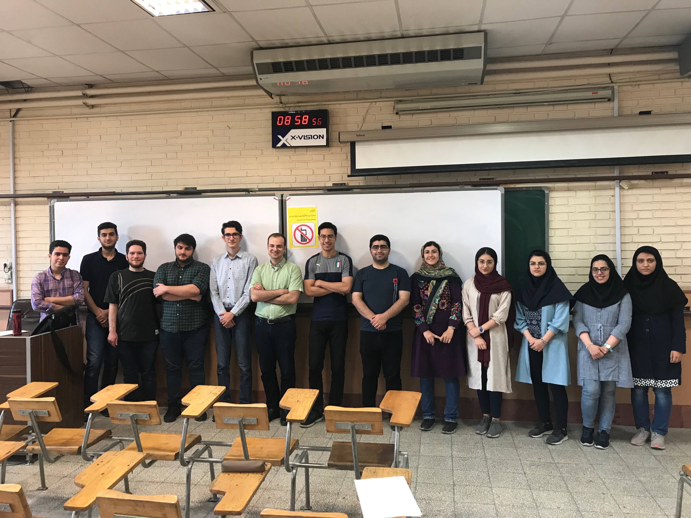
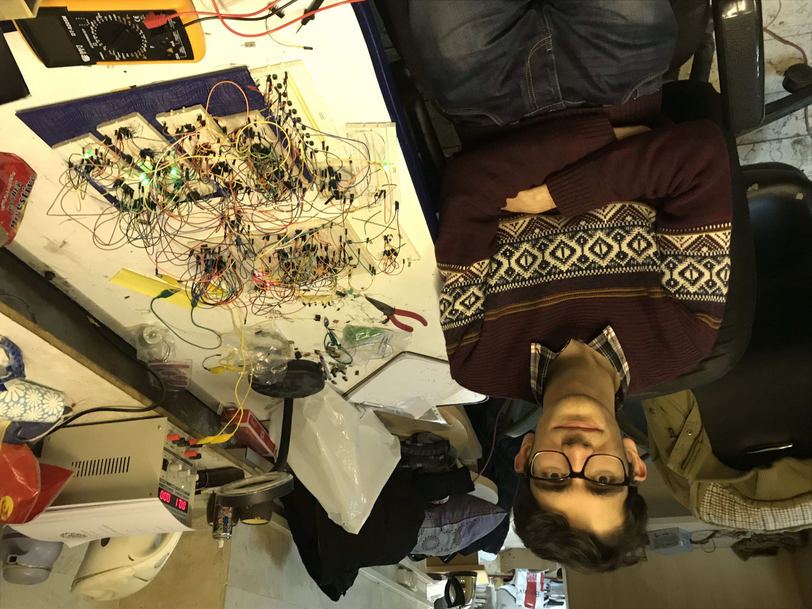
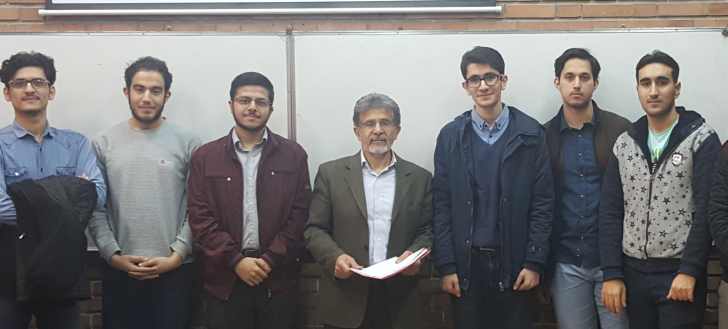
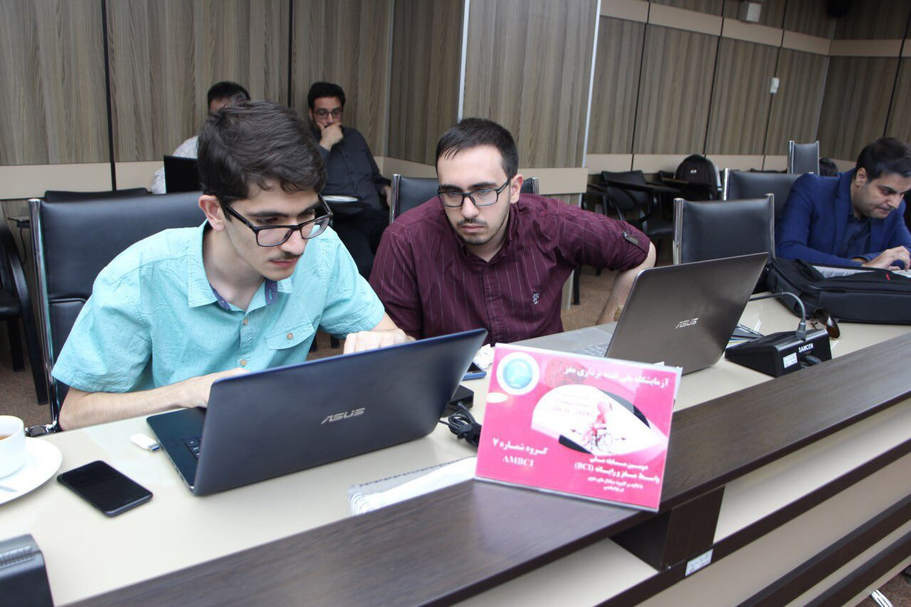

Behrad Moniri
Some Photos!
Back to the main page.
Prof. Gohari and Prof. Yassaee's High Dimensional Probability Class, Sharif, Spring 2019.

Prof. Maddah-Ali's Theory of Machine Learning Class, Sharif, Fall 2019.

Prof. Golestani's Introduction to Machine Learning Class, Sharif, Spring 2019

Prof. Salehkaleybar's Causal Inferene Class, Sharif, Spring 2018

Prof. Salehkaleybar's Algorithm Design Class, Sharif, Spring 2019

A Giant Logic Circuit and Me!, Logic Circuits Course Project, EE Dept. Basement, Sharif, Winter 2017.

Prof. Sharifbakhtiar's Class, Sharif, Fall 2018.

Me and A. A., National Brain Mapping Lab.